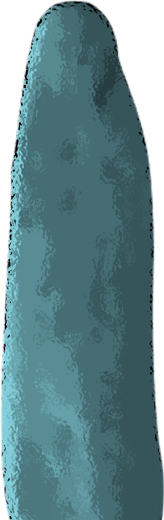
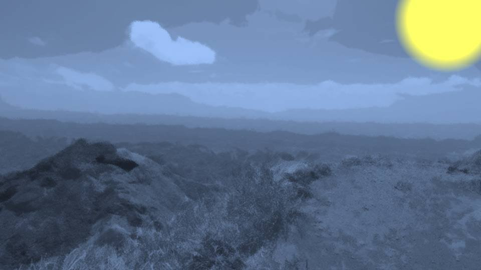
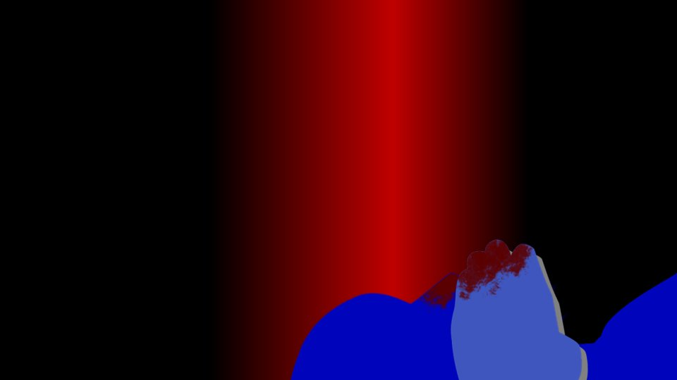

屋梁落月～転～
豊岳駅で聞いたのが1番目、そして今聞いているのが2番目。
五島の言っていたなんとかサウンドってのが、今この荒田の地でも不気味に鳴り響いている。
五島の言っていたなんとかサウンドってのが、今この荒田の地でも不気味に鳴り響いている。

青々と新葉をつけていた木々が、枯れている。
この数十本の木がほんの数十分で枯れてしまうなんてあり得ない。
この数十本の木がほんの数十分で枯れてしまうなんてあり得ない。


「春花は急いで新村家に戻って！ みんなと安全な場所に避難するの！」
「何だよそれ、お母さんはどうするつもりだよ……」
「別の場所を見てくる」
「いやいや、そりゃないだろ、一緒に戻ろうぜ」
「こうなった以上、一刻も早く茅萱ちゃんを見つけないと。 それに、本当に栄一郎さんやサクラさんが茅萱ちゃんをさらったとすれば、私なら話ができる」
「何だよそれ、お母さんはどうするつもりだよ……」
「別の場所を見てくる」
「いやいや、そりゃないだろ、一緒に戻ろうぜ」
「こうなった以上、一刻も早く茅萱ちゃんを見つけないと。 それに、本当に栄一郎さんやサクラさんが茅萱ちゃんをさらったとすれば、私なら話ができる」
「そんなのおかしいだろ！ 死体が歩き回ってるんだぞ！？
声がそっくりでも別人に決まってるだろ！
もしお母さんも行くって言うなら、私も行くからな！」
「危険よ！」
「危険を承知でここに来たんだ。 それに豊岳駅のこと、知ってるだろ？ 死月妖花に私たちを逃がすつもりなんてない」
「………… できるだけ早く戻るわよ。 心当たりがあるわ、ついてきて！」
「危険よ！」
「危険を承知でここに来たんだ。 それに豊岳駅のこと、知ってるだろ？ 死月妖花に私たちを逃がすつもりなんてない」
「………… できるだけ早く戻るわよ。 心当たりがあるわ、ついてきて！」
お母さんはすっかり見通しが良くなった森の中を駆けだした。
私もお母さんを追いかけるが、大量の落ち葉や枯れ枝が積もっていて走りにくい。
時々、小動物たちがパニックを起こしたかのように走っていくのが見える。
私もお母さんを追いかけるが、大量の落ち葉や枯れ枝が積もっていて走りにくい。
時々、小動物たちがパニックを起こしたかのように走っていくのが見える。
私たちだけでなく、動物たちもこの異常な状況に気づいたようだ。
おそらく五島もあの音を聞いて状況を確認済みだろうが、どのように考えるだろうか。
今、実害は木が枯れた程度だが……。
おそらく五島もあの音を聞いて状況を確認済みだろうが、どのように考えるだろうか。
今、実害は木が枯れた程度だが……。


お母さんに連れてこられたのは、墓地広場だった。
かすかに渓流の音が聞こえる。
そして墓標代わりの長い石が1つ立てられている。
本当なら今夜、チガ姉がここで継承の儀をするはずだったんだよな。
かすかに渓流の音が聞こえる。
そして墓標代わりの長い石が1つ立てられている。
本当なら今夜、チガ姉がここで継承の儀をするはずだったんだよな。
「ここにチガ姉がいるのか？」
「ううん、栄一郎さんもサクラさんもここに土葬されたのよ。
ここにその死体がなかったとしたら……」
「もしかしてその土葬された死体を掘り起こそうって言うんじゃ……」
「もしかしてその土葬された死体を掘り起こそうって言うんじゃ……」

「いやなら、新村家に戻りなさい」
お母さんは本気で掘り起こすつもりなのか、墓石の周囲をじっと観察している。
「わ、分かったよ、手伝うよ……」
ミイラの次は土葬された死体かよ……。
お母さんは本気で掘り起こすつもりなのか、墓石の周囲をじっと観察している。
「わ、分かったよ、手伝うよ……」
ミイラの次は土葬された死体かよ……。
「でもどうやって掘り起こすんだ？
そんな浅くはないだろうし、道具もないぞ？」
「掘り起こすんじゃないわ。この辺りの地面を調べるの。 掘り起こした痕がないか、何かが這い出た痕がないか」
なるほど、土葬の穴なら深くて大きいだろうし、そう簡単に埋められるものではない。
人が出てきた穴なんて、数日で完全にごまかすことはできないはずだ。
「掘り起こすんじゃないわ。この辺りの地面を調べるの。 掘り起こした痕がないか、何かが這い出た痕がないか」
なるほど、土葬の穴なら深くて大きいだろうし、そう簡単に埋められるものではない。
人が出てきた穴なんて、数日で完全にごまかすことはできないはずだ。
「春花は山側の方から見て回って。私は渓流側から回る」
「分かった！」
「分かった！」
お母さんと真逆の方へ足を進める。
この広場は100メートル四方だから、月明かりもあるし、2人なら10分もあればチェックが終わるだろう。
この広場は100メートル四方だから、月明かりもあるし、2人なら10分もあればチェックが終わるだろう。

じっと足元を見ながら広場の端に沿って歩く。
しかしほとんどが背の低い枯れ草に覆われており、掘り起こしたようには見えない。
10メートルほど前に視線をやるも、地面の様子はどこも同じだ。
もし死体が出て来たなら、その部分の草はないはず。
しかしほとんどが背の低い枯れ草に覆われており、掘り起こしたようには見えない。
10メートルほど前に視線をやるも、地面の様子はどこも同じだ。
もし死体が出て来たなら、その部分の草はないはず。
いや、そんなに簡単に見つかるなら、昼間の捜索部隊が異変に気づいていただろう。
わずかでも違和感のあるところを探し出さなくては。
わずかでも違和感のあるところを探し出さなくては。
だけど死体が這い出すって言っても、もう10年以上前に埋めたはずだよな？
とっくに白骨化しているはずなのに、チガ姉が録音した声にははっきりと肉声が聞こえた。
どうすればそんなことが可能かなんて、五島でもない私に分かるはずがない。
とっくに白骨化しているはずなのに、チガ姉が録音した声にははっきりと肉声が聞こえた。
どうすればそんなことが可能かなんて、五島でもない私に分かるはずがない。
そう言えば、五島に現状を連絡しておいた方がいいかな。
ミイラを見つけたことも報告しておかないと。
ミイラを見つけたことも報告しておかないと。

くそ、さすがにここは圏外かよ……。
って、なつみからメッセージが2件届いてた。
って、なつみからメッセージが2件届いてた。
"春花、大丈夫かな？ ずっと戻って来ないから心配だよ。"
そうか、なつみには何も知らせてないもんなあ。
連絡しようにも圏外じゃどうしようもないし……。
もう1つのメッセージを見てみる。
そうか、なつみには何も知らせてないもんなあ。
連絡しようにも圏外じゃどうしようもないし……。
もう1つのメッセージを見てみる。
"夏菜ちゃんって子から聞いたんだけど、春花はおばさんと洞窟に行ったんだよね？ ミイラを探しに行くって"
夏菜は家に戻ったのか。
なつみと合流して、状況を説明して――。
夏菜は家に戻ったのか。
なつみと合流して、状況を説明して――。
って、ちょっと待てよ！ なつみはどこまで知ってるんだ！？
あいつには情報を与えないようにしないといけないのに……！
あいつには情報を与えないようにしないといけないのに……！
これでは死月妖花にも私たちの行動が筒抜けってことか！
もうこれ以上無理に隠そうとせず、なつみには目も耳もふさいでもらわないといけない……！
やっぱり、ここの捜索はお母さんに任せて私は早く戻ろう！
「お母さん！ 急用ができたから家に戻る！」
もうこれ以上無理に隠そうとせず、なつみには目も耳もふさいでもらわないといけない……！
やっぱり、ここの捜索はお母さんに任せて私は早く戻ろう！
「お母さん！ 急用ができたから家に戻る！」
返事がない。
渓流の音で聞こえなかったのだろうか。
渓流の音で聞こえなかったのだろうか。
目を凝らしても、人影がない。
墓石や立ち枯れた木は月明かりではっきり見えるのに、お母さんの姿が見えない。
まさか、無理しすぎて倒れてたりしないよな！？
お母さんが歩いていった方へ走り、何度も名前を呼ぶ。
墓石や立ち枯れた木は月明かりではっきり見えるのに、お母さんの姿が見えない。
まさか、無理しすぎて倒れてたりしないよな！？
お母さんが歩いていった方へ走り、何度も名前を呼ぶ。
さすがに100メートル四方の広場を駆け回るのは骨が折れる。
すぐに徒歩に変え、より大きな声でお母さんを呼ぶ。
腰から首まで動かし、360度見渡す。
すぐに徒歩に変え、より大きな声でお母さんを呼ぶ。
腰から首まで動かし、360度見渡す。
「お母さん！ お母さんどこだよ！ 返事しろよ！」
物陰で見えないのだろうか。
やっぱり渓流の音で私の声がかき消されているのだろうか。
それとも、お母さんは崖の下の方へ行ったのだろうか。
あらゆる可能性を考えるが、道理に合う理由は出てこない。
物陰で見えないのだろうか。
やっぱり渓流の音で私の声がかき消されているのだろうか。
それとも、お母さんは崖の下の方へ行ったのだろうか。
あらゆる可能性を考えるが、道理に合う理由は出てこない。
認めたくなかった。
お母さんまで誘拐されたなんて、認めたくなかった。
私が下を向いて歩いている間に、お母さんは連れ去られたのだろうか。
いや、そう言えばここのすぐ近くには……！
お母さんまで誘拐されたなんて、認めたくなかった。
私が下を向いて歩いている間に、お母さんは連れ去られたのだろうか。
いや、そう言えばここのすぐ近くには……！

ここは、サクラさんが落下したと言われている崖だ。
お母さんがここから足を滑らせて落ちた可能性だってあるのだ。
しかし、お母さんが連れ去られた可能性と、なぜか広場から離れ、間抜けにも崖から滑落した可能性とどちらが高いか。
今、渓流の方へ向かうことが無駄足だってことくらい、私にだって分かっている。
お母さんがここから足を滑らせて落ちた可能性だってあるのだ。
しかし、お母さんが連れ去られた可能性と、なぜか広場から離れ、間抜けにも崖から滑落した可能性とどちらが高いか。
今、渓流の方へ向かうことが無駄足だってことくらい、私にだって分かっている。

いや、もしかしたらお母さんは、何者かに崖から突き落とされたのかもしれない。
ここから私の足で崖の下へ行くには10分はかかる。
こうしている間にも、お母さんはどんどん遠くへ行くかもしれない。
あるいは、崖の下で身動きとれず苦しみ、最悪は……！
ここから私の足で崖の下へ行くには10分はかかる。
こうしている間にも、お母さんはどんどん遠くへ行くかもしれない。
あるいは、崖の下で身動きとれず苦しみ、最悪は……！
「お母さん！ お母さーん、どこだよおお！！」
近くから聞こえるさわやかなせせらぎも、こういう時はとても耳障りだ。
このせせらぎがなければ、私の声はお母さんにもっと届きやすいはず。
それでも私は、腹に力を込めてお母さんを呼ぶ。
どんなに叫んでも、せせらぎが私の邪魔をする。
近くから聞こえるさわやかなせせらぎも、こういう時はとても耳障りだ。
このせせらぎがなければ、私の声はお母さんにもっと届きやすいはず。
それでも私は、腹に力を込めてお母さんを呼ぶ。
どんなに叫んでも、せせらぎが私の邪魔をする。
集落の人たちは思っている。
チガ姉は呪殺されてしまったのだろうと。
そう願っているとお母さんが言っていた。
お母さんが消えてしまったことを知ったら、またみんなは喜ぶのだろうか。
そんなの……そんなの、絶対に許さない……！
絶対にお母さんを連れて帰るんだ！
チガ姉は呪殺されてしまったのだろうと。
そう願っているとお母さんが言っていた。
お母さんが消えてしまったことを知ったら、またみんなは喜ぶのだろうか。
そんなの……そんなの、絶対に許さない……！
絶対にお母さんを連れて帰るんだ！
「うわ！」
道中、足を滑らせ転びそうになる。
何とか転倒は免れたが、そのまま足が止まる。
お母さんが消えたなんて……！
絶対に私が見つけてみせる！
もう一度足を踏み出そうとした時――。
道中、足を滑らせ転びそうになる。
何とか転倒は免れたが、そのまま足が止まる。
お母さんが消えたなんて……！
絶対に私が見つけてみせる！
もう一度足を踏み出そうとした時――。
「ん……春花？」
…………？
誰か、私を呼んだか？
どこか聞き覚えのある声。
私が焦っているのを理解できていないような、とぼけた声。
…………？
誰か、私を呼んだか？
どこか聞き覚えのある声。
私が焦っているのを理解できていないような、とぼけた声。

ずっと探していたはずなのに、目の前の光景を信じられなかった。
むしろ、あり得ない光景のようにすら思えた。
みんながあれだけ探し回ったにもかかわらず、その痕跡すら見つけることができなかったのだ。
唯一の痕跡と言えるのは、お父さんとサクラさんに連れ去られたあの音声くらいか。
むしろ、あり得ない光景のようにすら思えた。
みんながあれだけ探し回ったにもかかわらず、その痕跡すら見つけることができなかったのだ。
唯一の痕跡と言えるのは、お父さんとサクラさんに連れ去られたあの音声くらいか。
そのことすらなかったかのように、チガ姉は私を不思議そうに見つめる。
その目がとても不気味だ。
お母さんが消えた代わりにチガ姉が現れた。
別の次元から現れたかのように、この大変な事件をあざ笑うかのように――。
その目がとても不気味だ。
お母さんが消えた代わりにチガ姉が現れた。
別の次元から現れたかのように、この大変な事件をあざ笑うかのように――。
「チ……チガ姉……。
無事……だったんだな」
「ん……どうしたの？ そんな顔して……。 っていうか、どうしてこんなところに？」
「ん……どうしたの？ そんな顔して……。 っていうか、どうしてこんなところに？」

「チガ姉、今までどこに行ってたんだよ！
みんな心配してたんだぞ！」
チガ姉の肩に手を乗せ声をかけるが、どうも様子が変だ。
血まみれだし、ひどくふらふらしている。
チガ姉の肩に手を乗せ声をかけるが、どうも様子が変だ。
血まみれだし、ひどくふらふらしている。
「春花……
一体何を言っているの？」
こんな状態なのに、チガ姉は自分のことをまるで分かっていないような……。
今だって、鼻血がたらたらと垂れているのだ。
こんな状態なのに、チガ姉は自分のことをまるで分かっていないような……。
今だって、鼻血がたらたらと垂れているのだ。
一瞬何が起きたのか分からなかった。
地球がぐるりと回ったかと思うと、背中に強い衝撃。
そして、私に人がのしかかる。
今度は私の口がふさがれ、急激な息苦しさに襲われる。
地球がぐるりと回ったかと思うと、背中に強い衝撃。
そして、私に人がのしかかる。
今度は私の口がふさがれ、急激な息苦しさに襲われる。

状況を理解するのに時間を要した。
チガ姉は私を転ばせた後、馬乗りになり、私の口を手でふさいでいるのだ。
あまりの苦しさに手をどけようとするも、強い力で全く動かない。
チガ姉は私を転ばせた後、馬乗りになり、私の口を手でふさいでいるのだ。
あまりの苦しさに手をどけようとするも、強い力で全く動かない。
「ん……いい、春花。このまま山道を進めば廃屋につく。
叔母さんはそこにいるから、寄り道しないですぐに行くこと」
お母さんが廃屋にいる？
この道をそのまま進めば？
何でチガ姉がそんなこと――。
お母さんが廃屋にいる？
この道をそのまま進めば？
何でチガ姉がそんなこと――。
「ん……春花、分かった？」
チガ姉が顔を近づけ、私に理解を求める。
チガ姉の顔から、ボタボタと血が垂れ、私の顔に降りかかる。
どうしてしまったのだろうか。
死月妖花の影響を受けて、おかしくなってしまったのだろうか。
チガ姉が顔を近づけ、私に理解を求める。
チガ姉の顔から、ボタボタと血が垂れ、私の顔に降りかかる。
どうしてしまったのだろうか。
死月妖花の影響を受けて、おかしくなってしまったのだろうか。
この緑の目を持つ者は、ある条件下で強烈な殺人衝動に駆られるらしい。
それが暴走したり、操られたりしていたとすれば……！
それが暴走したり、操られたりしていたとすれば……！
「――――」
私はただ、うなずくことしかできなかった。
ここでチガ姉に逆らうことなど意味のないこと。
仮にチガ姉が意識を奪われていたとしても、逆に正気だとしても、その意思に沿うのが上策だ。
私はただ、うなずくことしかできなかった。
ここでチガ姉に逆らうことなど意味のないこと。
仮にチガ姉が意識を奪われていたとしても、逆に正気だとしても、その意思に沿うのが上策だ。
私の軽い肯定の意思を確認すると、チガ姉はすぐに私から離れ、墓地広場の方へ走っていった。
何だ…… 何なんだ？ 今のは……。
何だ…… 何なんだ？ 今のは……。

――私はしばらくの間、大の字になって空の丸い月を眺めていた。
眺めていたというよりは、何も考えずに視線を真上に向けていた。
眺めていたというよりは、何も考えずに視線を真上に向けていた。
何だったんだ、さっきのチガ姉は。おかしくなってしまったのか？
行方不明になっている間、何があった……？
しかもお母さんは山道の廃屋にいる……？
行方不明になっている間、何があった……？
しかもお母さんは山道の廃屋にいる……？
ゆっくりと身体を起こす。
顔中にチガ姉の血がついている。
洗い流したいところだけど、そんな暇があったらお母さんを探し出さないと。
チガ姉によれば、この道を行けば廃屋があり、そこにお母さんがいるとか。
顔中にチガ姉の血がついている。
洗い流したいところだけど、そんな暇があったらお母さんを探し出さないと。
チガ姉によれば、この道を行けば廃屋があり、そこにお母さんがいるとか。
チガ姉が正気なのか狂ったのかは知らないけど、生きていることは確認できた。
となれば、あとするべきは、お母さんの無事を確かめることだ！
となれば、あとするべきは、お母さんの無事を確かめることだ！
Read ✓ Next in this arc →